Elenco: |
|||||
|---|---|---|---|---|---|
|
Jeff Bridges 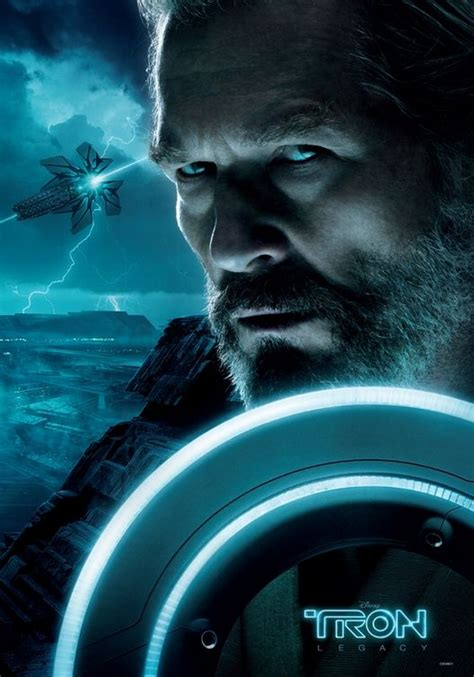Kevin Flynn |
garret hedlund 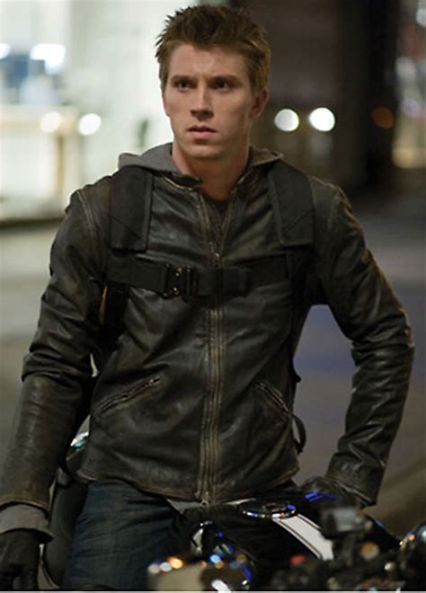Sam Flynn |
Olivia Wilde 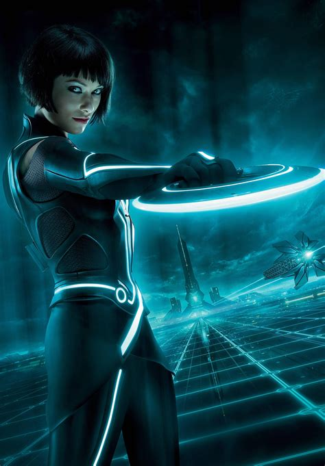Quorra |
Bruce Boxleitner 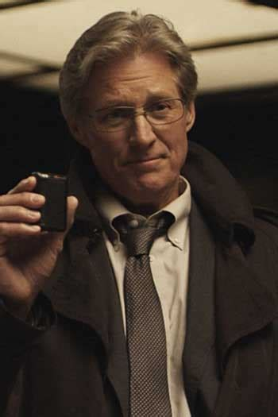Alan Bradley |
James Frain 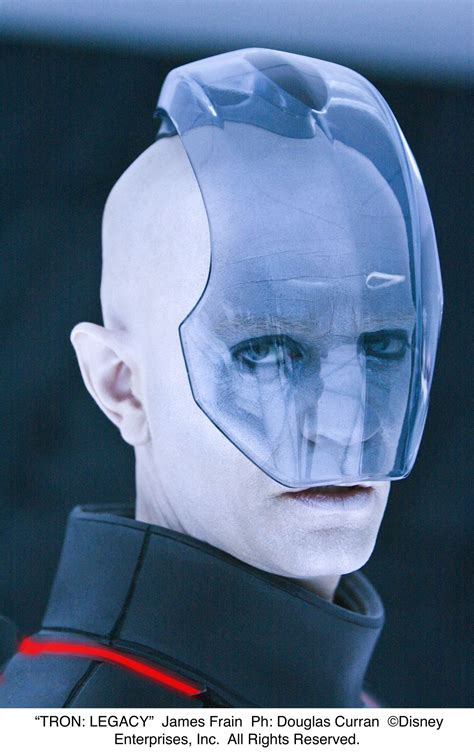Jarvis |
Beau Garrett 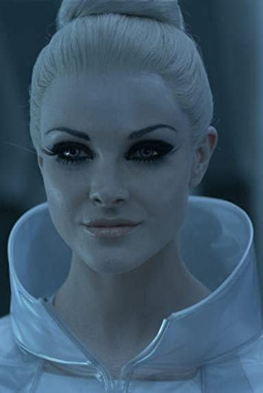Gem |
Peliculas relacionadas: |
||||
|---|---|---|---|---|
|
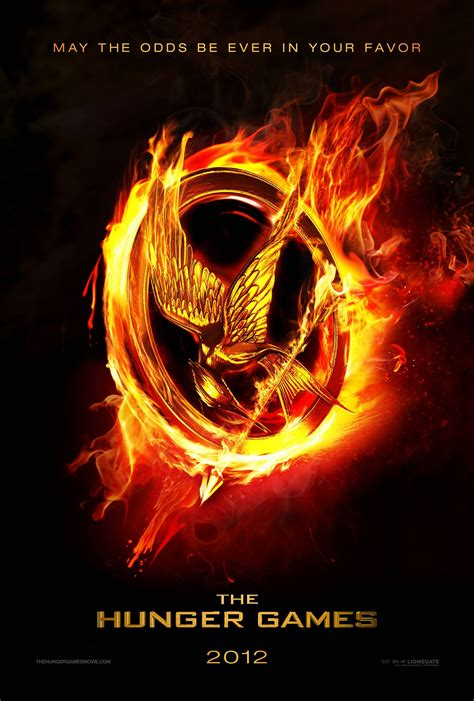
Los juegos del habre |
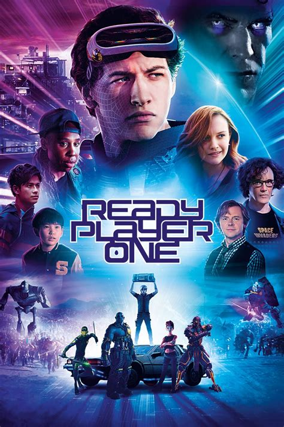
Ready Player One |
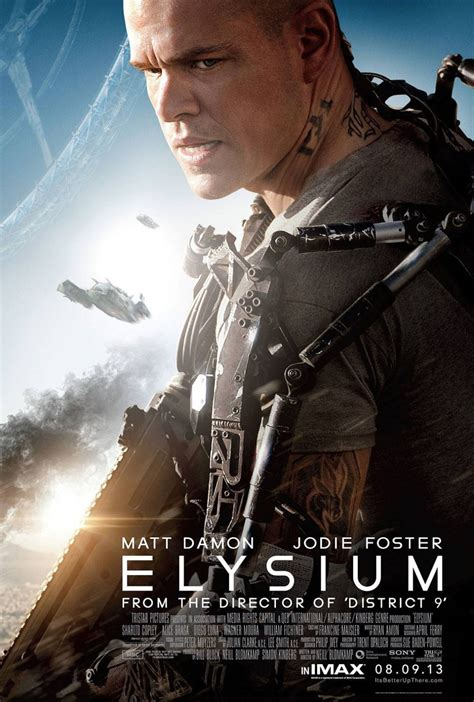
Elysum |
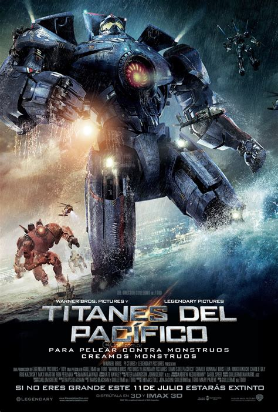
Titanes Del pacifico |
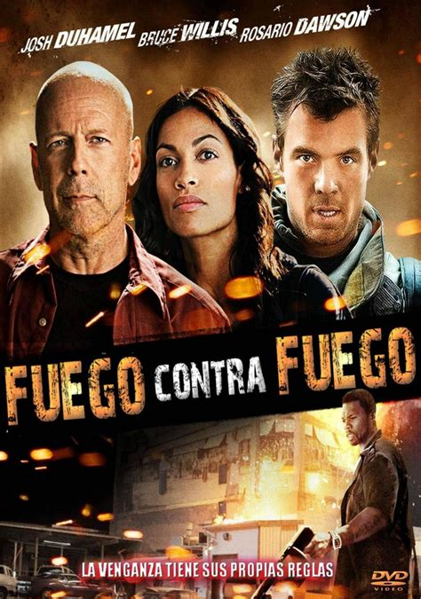
Fuego contra fuego |